SparkSession: SQL state and the query entry point
component index
spark in a classic PySpark script is a Python SparkSession with a Py4J
handle, _jsparkSession, to org.apache.spark.sql.classic.SparkSession.
It answers "under which SQL settings, catalog, and functions should this query run?"
The SparkContext owns the application and scheduling; SparkEnv
holds services in each JVM. Creating another session need not create either of those.
Both session objects stay on the driver side: in the AM container in YARN cluster mode,
or on the submit host in client mode. This is not a Connect session.
Flow at a glance
- First session: Registers a local temporary view named paid_orders.
- Sibling session: Shares the SparkContext, not the local views.
- Name lookup: Cannot resolve that local view in the sibling session.
Watch for: Stopping either session stops their shared SparkContext, even though their local views are separate.
Show the animated flow

Creation and state ownership
- The Python builder collects key/value options. If no live session exists,
classic
getOrCreate() converts the options to a SparkConf, asks
SparkContext.getOrCreate(conf) for a context, then constructs a session wrapper.
If a Python session is already live, it returns that session after applying modifiable
settings. It does not restart the context to change its master or driver memory.
- The wrapper reuses a non-stopped default JVM session when available, otherwise
constructs one from
self._jsc.sc() and the options. When installing the first live
Python session it sets the JVM default and active sessions. The JVM distinguishes
a thread's active session from the process-wide default.
newSession() returns another wrapper with the same SparkContext and a
new JVM session. Its constructor receives Some(sharedState) but no
parent SessionState. The division below makes both isolation and reuse possible.
| State |
What lives there |
What a sibling session sees |
SessionState and session SQLConf |
Runtime settings, local temporary views, registered UDFs, parser/analyzer/optimizer/planner |
Independent settings and local namespace; a local view is not automatically visible |
SharedState |
SQL table cache, external catalog and global temporary view manager |
Same cache and shared catalog infrastructure; a global temp view can be addressed through its global-temp database |
SparkContext |
One application ID, executor pool, schedulers |
Same running Spark application, not a second YARN allocation |
One call: SQL text to a result
For df = spark.sql("SELECT * FROM orders WHERE amount > :floor", {"floor": 10}),
Python converts named values to Java literal columns and calls _jsparkSession.sql.
The JVM parser works with this session active, converting the SQL and
named parameters to a LogicalPlan. Dataset.ofRows binds it to a
QueryExecution. The output is a Python DataFrame backed by a JVM Dataset[Row],
not the matching rows. Analysis may already reject the query at this point.
For a SELECT, an action such as df.count() drives execution.
QueryExecution uses the SQL planner to turn the optimized
logical plan into a prepared physical SparkPlan. The count action returns a
JVM Long and then a Python int. Distributed work goes through Spark Core, not from
the session directly to YARN. Do not generalize SELECT laziness to all spark.sql
calls: DDL/DML commands can execute eagerly.
Diagnostic: a view disappears but executors are still running
spark.range(1).createOrReplaceTempView("only_in_this_session")
other = spark.newSession()
other.table("only_in_this_session").collect()
Assuming no persistent table of that name, the last line fails to resolve the view. Use
the creating session, or create a global temp view and qualify its name; asking for
more executors cannot change name resolution. Conversely, other.stop() is
not session-local cleanup: it stops the shared context and clears session references,
so the first session can no longer submit work either.